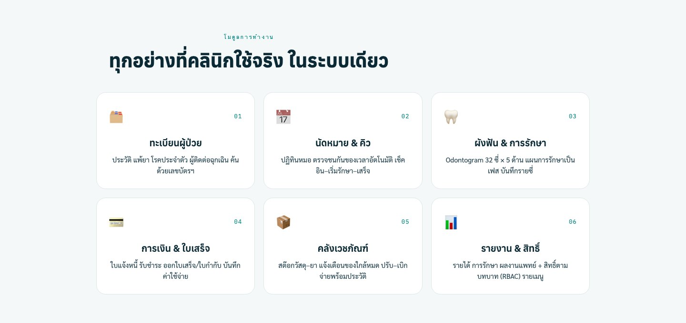

01
Patient · Queue
เวชระเบียน นัดหมาย และคิวหน้าเคาน์เตอร์
ลงทะเบียนคนไข้ ค้นหาด้วย HN หรือชื่อ จองนัดหมายรายหมอรายเก้าอี้ และเรียกคิวหน้าคลินิกได้จากหน้าจอเดียว ประวัติการรักษาทั้งหมดผูกกับคนไข้แบบต่อเนื่อง

- ทะเบียนผู้ป่วย · HN · ประวัติต่อเนื่อง
- นัดหมายรายหมอ รายเก้าอี้
- เรียกคิวหน้าเคาน์เตอร์